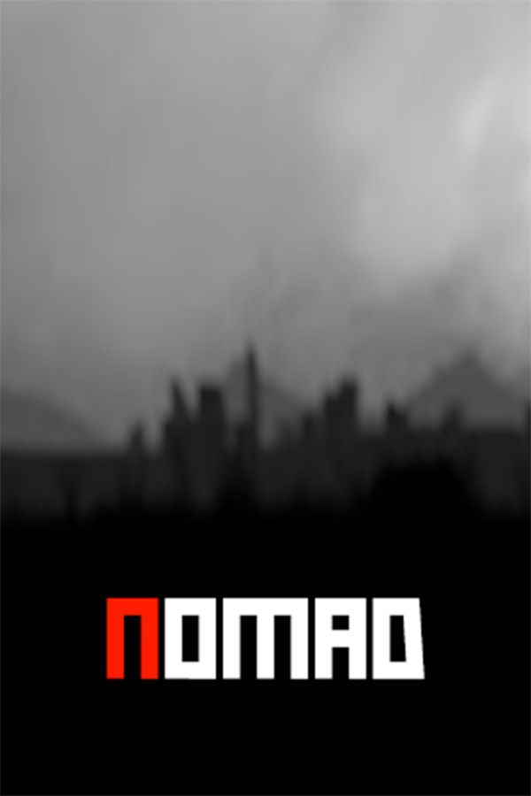

Nomad
Nomad
Details
|  | |
| Playtime | 1m 0s |
| Last Activity | 13/05/2019 5:24:46 |
| Added | 06/06/2016 |
| Modified | Never |
| Completion Status | Played |
| Source | Steam |
| Platform | PC |
| Release Date | 26/06/2015 |
| Community Score | 59 |
| Critic Score | |
| User Score | |
| Genre | Action Adventure Early Access Free to Play Indie Massively Multiplayer RPG |
| Developer | Diminished Studios |
| Publisher | Diminished Studios |
| Feature | Achievements Co-op MMO Multiplayer Online Co-Op Online Pvp Pvp Trading Cards |
| Links | PCGamingWiki Community Hub Discussions Guides Achievements Store Page News |
Description
Nomad is a sandbox survival game. Hunt, craft, kill and survive! Find food, drink, weapons, ammo and medical supplies - or craft them! Build a base to protect yourself but also remember to protect the base from raiding players.
Explore
Set years after an apocalypse, the world is over grown, broken and abandoned. Explore the massive 4km x 4km island to find gear and loot to aid in your survival.
Survive
Survival is key. Hunt for food and drink across the island, or simply kill others for it. Scavenge for medical items to heal broken bones and deep wounds.
PVP
Find weapons and ammo and hunt down other players. Be that bloodthirsty bandito, or be a hero helping others - it's entirely up to you.
Vehicles
Find, refuel and drive a range of vehicles to help traverse the island. Protect and store vehicles behind garage doors to keep them away from pesky raiders.
Quests
Safe Zone Quests bring a new level of PvE content to Nomad. Complete various quests that will make you travel all across the island to discover history and lore.
Base Building
Create your own bases by chopping down trees for wood. First create your foundation and snap walls, windows, doorways and ceilings to it. Add a door and lock it. Place a workbench so that other players cannot build in the surrounding area. Make sure your workbench is hidden as other players can use it. Upgrade your wooden base to stone, by going out and mining with a pickaxe.
Farming
Find and collect packet of seeds around the world then use them to make your very own farm. Farming brings any benefits so make sure it's well protected.
Sleepers
We all have to sleep sometime. In Nomad, disconnected players will sleep on the floor so make sure you are in a safe, protected area when logging off.
Host your own servers
Host your own server using the stand-a-lone server located at your Nomad Steam install directory. Set your own admins, make your own community.
Explore
Set years after an apocalypse, the world is over grown, broken and abandoned. Explore the massive 4km x 4km island to find gear and loot to aid in your survival.
Survive
Survival is key. Hunt for food and drink across the island, or simply kill others for it. Scavenge for medical items to heal broken bones and deep wounds.
PVP
Find weapons and ammo and hunt down other players. Be that bloodthirsty bandito, or be a hero helping others - it's entirely up to you.
Vehicles
Find, refuel and drive a range of vehicles to help traverse the island. Protect and store vehicles behind garage doors to keep them away from pesky raiders.
Quests
Safe Zone Quests bring a new level of PvE content to Nomad. Complete various quests that will make you travel all across the island to discover history and lore.
Base Building
Create your own bases by chopping down trees for wood. First create your foundation and snap walls, windows, doorways and ceilings to it. Add a door and lock it. Place a workbench so that other players cannot build in the surrounding area. Make sure your workbench is hidden as other players can use it. Upgrade your wooden base to stone, by going out and mining with a pickaxe.
Farming
Find and collect packet of seeds around the world then use them to make your very own farm. Farming brings any benefits so make sure it's well protected.
Sleepers
We all have to sleep sometime. In Nomad, disconnected players will sleep on the floor so make sure you are in a safe, protected area when logging off.
Host your own servers
Host your own server using the stand-a-lone server located at your Nomad Steam install directory. Set your own admins, make your own community.